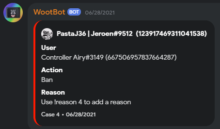
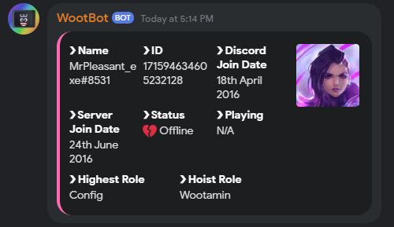

About
Katara Bot was originally Developed by MrPleasant_exe but later reworked by BigBrainAFK for the WootingKB server. KararaBot offers a variaty of functions for discord admins such as action logging, custom command creation, moderation commands and more, for a full list of commands/features click here



KataraBot Features
Moderation Tools
Tools such as ban, kick, user info, server info and mute with logging enabled
Custom commands
With %tag you are able to make custom commands which are stored using Postgresql.
Mod Roles
Katara is capable of listening to certain roles only vs just the owner of the bot
Loving
Katara is love, Katara is life.